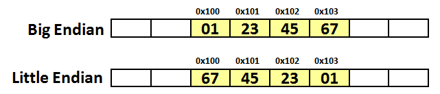
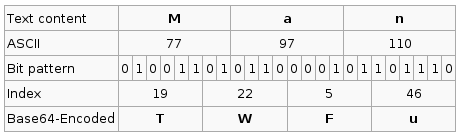

Standard Scrap
Table of Contents
1 浮点数的二进制表示
1.1 一
void main(void) { int num = 9; float* pfloat = # printf("num = %d\n", num); // num = 9 printf("*pfloat = %f\n", *pfloat); // *pfloat = 0.000000 *pfloat = 9.0; printf("num = %d\n", num); // num = 1091567616 printf("*pfloat = %f\n", *pfloat); // *pfloat = 9.000000 }
int num = 9; 声明了一个整数变量，类型为 int ，值为 9，二进制写法为 1001 。普通的 32 位计算机用 4 个字节表示 int 变量，所以 9 就被保存为 00000000 00000000 00000000 00001001 ，写成 16 进制就是 0x00000009 。那么，为什么 0x00000009 还原成浮点数，就成了 0.000000 ？
1.2 二
根据国际标准 IEEE 754，任意一个二进制浮点数 V 可以表示成下面的形式：
\[ V = (-1)^s \times M \times 2^E \]
- \((-1)^s\) 表示符号位，当 s = 0，V 为正数；当 s = 1，V 为负数。
- M 表示有效数字，1 <= M < 2。
- \(2^E\) 表示指数位。
举例来说：
- 十进制的 5.0，写成二进制是 101.0，相当于 $1.01 × 2^2$，即 s = 0, M = 1.01, E = 2。
- 十进制的 -5.0，写成二进制是 -101.0，相当于 $-1.01 × 2^2$，即 s = 1, M = 1.01, E = 2。
IEEE 754 规定：
- 32 位的浮点数，最高的 1 位是符号位 s，接着的 8 位是指数 E，剩下的 23 位为有效数字 M。
- 64 位的浮点数，最高的 1 位是符号位 s，接着的 11 位是指数 E，剩下的 52 位为有效数字 M。


1.3 三
前面说过，1 <= M < 2，也就是说，M 可以写成 1.xxxxxx 的形式，其中 xxxxxx 表示小数部分。IEEE 754规定， 在计算机内部保存 M 时，默认这个数的第一位总是 1，因此可以被舍去 ，只保存后面的 xxxxxx 部分。比如保存 1.01 的时候，只保存 01 ，等到读取的时候，再把第一位的 1 加上去。这样做的目的，是节省 1 位有效数字。以 32 位浮点数为例，留给 M 只有 23 位，将第一位的 1 舍去以后， 等于可以保存 24 位有效数字 。
至于指数 E，情况就比较复杂。
首先，E 为一个无符号整数，8 位的 E 的取值范围为 0~255，11 位的 E 的取值范围为 0~2047。但是，科学计数法中的 E 是可以出现负数的，所以 IEEE 754 规定， E 的真实值必须再减去一个中间数 ，对于 8 位的 E，这个中间数是 127；对于 11 位的 E，这个中间数是 1023。比如，\(2^{10}\) 的 E 是 10，保存成 32 位浮点数时，必须保存成 10 + 127 = 137，即 10001001 。
然后，指数 E 还可以再分成三种情况：
- E 不全为 0 或不全为 1。这时，浮点数就采用上面的规则表示，即指数 E 的计算值减去 127 或 1023，得到真实值，再将有效数字 M 前加上第一位的 1。
- E 全为 0。这时，浮点数的指数 E 等于 1 - 127 或 1 - 1023，有效数字 M 不再加上第一位的 1，而是还原为
0.xxxxxx的小数。这样做是为了表示正负 0，以及接近于 0 的很小的数字。 - E 全为 1。这时，如果有效数字 M 全为0，表示正负无穷大（正负取决于符号位 s）；如果有效数字 M 不全为 0，表示这个数不是一个数（
NaN）。
1.4 四
回到一开始的问题：为什么 0x00000009 还原成浮点数，就成了 0.000000？
首先，将 0x00000009 拆分，得到第一位符号位 s = 0，后面 8 位的指数 E = 00000000，最后 23 位的有效数字 M = 000 0000 0000 0000 0000 1001。
由于指数 E 全为 0，因此，浮点数 V 就写成：
\[ V = (-1)^0 \times 0.00000000000000000001001 \times 2^{-126} = 1.001 \times 2^{-146} \]
显然，V 是一个很小的接近于 0 的正数，所以用十进制小数表示就是 0.000000。
那么浮点数 9.0，如何用二进制表示？还原成十进制又是多少？
浮点数 9.0 等于二进制的 1001.0，即 $1.001 × 2^3$。那么，第一位的符号位 s = 0，有效数字 M 等于 001 后面再加 20 个 0，凑满 23 位，指数 E 等于 3 + 127 = 130，即 10000010。所以，写成二进制形式，即 0 10000010 001 0000 0000 0000 0000 0000。这个 32 位的二进制数，还原成十进制，正是 1091567616。
1.5 Links
2 字节序
计算机硬件有两种储存数据的方式：
| 大端字节序（big endian） | 高位字节在前，低位字节在后（人类读写数值的方法） |
|---|---|
| 小端字节序（little endian） | 低位字节在前，高位字节在后 |
比如， 0x1234567 的大端字节序和小端字节序：

计算机电路先处理低位字节，效率比较高，因为计算都是从低位开始的。 所以，计算机的内部处理都是小端字节序。但是，人类还是习惯读写大端字节序。所以，除了计算机的内部处理，其他的场合几乎都是大端字节序，比如网络传输和文件储存。
处理器读取外部数据时必须知道数据的字节序，将其转成正确的值。然后，就正常使用这个值，完全不用再考虑字节序。即使是向外部设备写入数据，也不用考虑字节序，正常写入一个值即可。外部设备会自己处理字节序的问题。
2.1 Links
3 「回车」和「换行」
「回车」（carriage return）和「换行」（line feed）这两个概念的来历和区别。
在计算机出现之前，有一种电传打字机（Teletype Model 33），每秒钟可以打 10 个字符。但是打完一行换行的时候，要用去 0.2 秒，正好可以打两个字符。要是在这 0.2 秒里面，又有新的字符传过来，那么这个字符将丢失。
于是，研制人员在每行结尾增加了两个表示结束的字符。一个叫做「回车」，告诉打字机把打印头定位在左边界；另一个叫做「换行」，告诉打字机把纸向下移一行。
后来这两个概念就被搬到了计算机上。那时存储器很贵，一些科学家认为在每行结尾加两个字符太浪费了，于是就出现了分歧：
- Unix 系统下，每行结尾是「换行」，即
\n。 - Windows 系统下，每行结尾是「回车 + 换行」，即
\r\n。 - Mac 系统下，每行结尾是「回车」。
一个直接后果是，Unix/Mac 系统下的文件在 Windows 里打开时，所有文字会变成一行；而 Windows 下的文件在 Unix/Mac 下打开时，每行的结尾可能会多出一个 ^M 字符。
3.1 Links
4 EOF
EOF（End Of File）表示「文字流」（stream）的结尾。「文字流」可以是文件（file），也可以是标准输入（stdin）。
EOF 不是特殊字符，而是一个定义在头文件 stdio.h 的常量，一般等于 -1。
如果 EOF 是一个特殊字符，那么假定每个文本文件的结尾都有一个 EOF（也就是 -1），还是可以做到的，因为文本对应的 ASCII 码都是正值，不可能有负值。但是，二进制文件怎么办呢？怎么处理文件内部包含的 -1 呢？
后来查了资料才知道， 在 Linux 系统中，EOF 不是一个字符，而是当系统读取到文件结尾，所返回的一个信号值（也就是 -1）。 至于系统怎么知道文件的结尾，资料上说是通过比较文件的长度。
所以，处理文件可以写成下面这样：
int c; while ((c = fgetc(fp)) != EOF) { // Do something }
这样写有一个问题。 fgetc() 不仅是遇到文件结尾时返回 EOF，当发生错误时也会返回 EOF。因此，C 语言又提供了 feof() 函数，用来保证确实是到了文件结尾。 上面的代码 feof() 版本的写法就是：
int c; while (!feof(fp)) { c = fgetc(fp); // Do something }
但是，这样写也有问题。 fgetc() 读取文件的最后一个字符以后， feof() 依然返回 0；只有当 fgetc() 向后再读取一个字符（即越过最后一个字符）， feof() 才会返回一个非零值，表示到达文件结尾。 所以，按照上面这样写法，如果一个文件含有 N 个字符，那么 while 循环的内部操作会运行 N+1 次。所以，最保险的写法是像下面这样：
int c = fgetc(fp); while (c != EOF) { // Do something c = fgetc(fp); } printf(feof(fp) ? "\n End of file reached." : "\n Something went wrong.");
除了表示文件结尾，EOF 还可以表示标准输入的结尾：
int c; while ((c = getchar()) != EOF) { putchar(c); }
但是， 标准输入与文件不一样，无法事先知道输入的长度，必须手动输入一个字符，表示到达 EOF。
Linux 中，在新的一行的开头按下 Ctrl-D ，就代表 EOF ；如果在一行的中间按下 Ctrl-D ，则表示输出「标准输入」的缓存区，所以这时必须按两次 Ctrl-D 。Windows 中， Ctrl-Z 表示 EOF。
那么，如果真的想输入 Ctrl-D 怎么办？这时必须先按下 Ctrl-V ，然后就可以输入 Ctrl-D ，系统就不会认为这是 EOF 信号。 Ctrl-V 表示按字面含义解读下一个输入 ，要是想按字面含义输入 Ctrl-V ，连续输入两次就行了。
4.1 Links
5 Base64
MIME 主要使用两种编码转换方式：Quoted-printable 和 Base64，将 8 位的非英语字符转化为 7 位的 ASCII 字符。这样做的初衷是为了满足电子邮件中不能直接使用非 ASCII 码字符的规定，但是也有其他重要的意义：
- 所有的二进制文件，都可以因此转化为可打印的文本编码，使用文本软件进行编辑。
- 能够对文本进行简单的加密。
5.1 Quoted-printable
Quoted-printable 编码转换方式主要用于 ACSII 文本中夹杂少量非 ASCII 字符的情况，不适合于转换纯二进制文件。
- 每个字节转换为 3 个字符。
- 第一个字符固定是
=。 - 后面两个字符是两个十六进制数，分别代表字节前 4 位和后 4 位的数值。
- 所有不可打印的 ASCII 字符都必须用这种方式进行转换。
- 所有可打印的 ASCII 字符（十进制值从 33 到 126）保持原样不变，
=（十进制值 61）除外。
举例来说，ASCII 码中「换页字符」（form feed）的值是 12，二进制形式是 00001100 ，写成十六进制就是 0C ，因此它的编码值为 =0C 。
5.2 Base64
所谓 Base64，就是选出 64 个字符作为一个基本字符集，其他所有符号都转换成这个字符集中的字符：
- 大小写字母
- 数字
+、/、作为垫字的=（实际上是第 65 个字符）
转换方式：
- 将每 3 个字节作为一组，一共 24 个二进制位。
- 将 24 个二进制位分为 4 组，每个组有 6 个二进制位。
- 在每组前面加
00，扩展成 32 个二进制位，即 4 个字节。 - 根据下表，得到扩展后的每个字节的对应符号，这就是 Base64 的编码值。
| 0 | A | 16 | Q | 32 | g | 48 | w |
|---|---|---|---|---|---|---|---|
| 1 | B | 17 | R | 33 | h | 49 | x |
| 2 | C | 18 | S | 34 | i | 50 | y |
| 3 | D | 19 | T | 35 | j | 51 | z |
| 4 | E | 20 | U | 36 | k | 52 | 0 |
| 5 | F | 21 | V | 37 | l | 53 | 1 |
| 6 | G | 22 | W | 38 | m | 54 | 2 |
| 7 | H | 23 | X | 39 | n | 55 | 3 |
| 8 | I | 24 | Y | 40 | o | 56 | 4 |
| 9 | J | 25 | Z | 41 | p | 57 | 5 |
| 10 | K | 26 | a | 42 | q | 58 | 6 |
| 11 | L | 27 | b | 43 | r | 59 | 7 |
| 12 | M | 28 | c | 44 | s | 60 | 8 |
| 13 | N | 29 | d | 45 | t | 61 | 9 |
| 14 | O | 30 | e | 46 | u | 62 | + |
| 15 | P | 31 | f | 47 | v | 63 | / |
因为 Base64 将 3 个字节转化成 4 个字节，因此编码后的文本会比原文本大出三分之一左右。

举一个中文的例子，汉字「严」转化成 Base64 编码。汉字本身可以有多种编码，比如 GB2312、UTF-8、GBK 等，每一种编码的 Base64 对应值都不一样，下面以 UTF-8 为例。
- 「严」的 UTF-8 编码为
E4B8A5，写成二进制就是11100100 10111000 10100101。 - 将 24 位的二进制转换成 4 组一共 32 位的二进制
00111001 00001011 00100010 00100101。 - 对应的十进制数为 57、11、34、37，它们对应的 Base64 值就为 5、L、i、l。
所以，汉字「严」（UTF-8 编码）的 Base64 值就是 5Lil 。
5.3 Base64 特殊情况
字节数不足 3 个的处理方式：
两个字节的情况：将 16 个二进制位转成 3 组（6、6、4），最后一组前后都加 00 。这样得到一个 3 位的 Base64 编码，再在末尾补上 = 。
一个字节的情况：将 8 个二进制位转成 2 组（6、2），最后一组前面加 00 ，后面加 0000 。这样得到一个 2 位的 Base64 编码，再在末尾补上 == 。